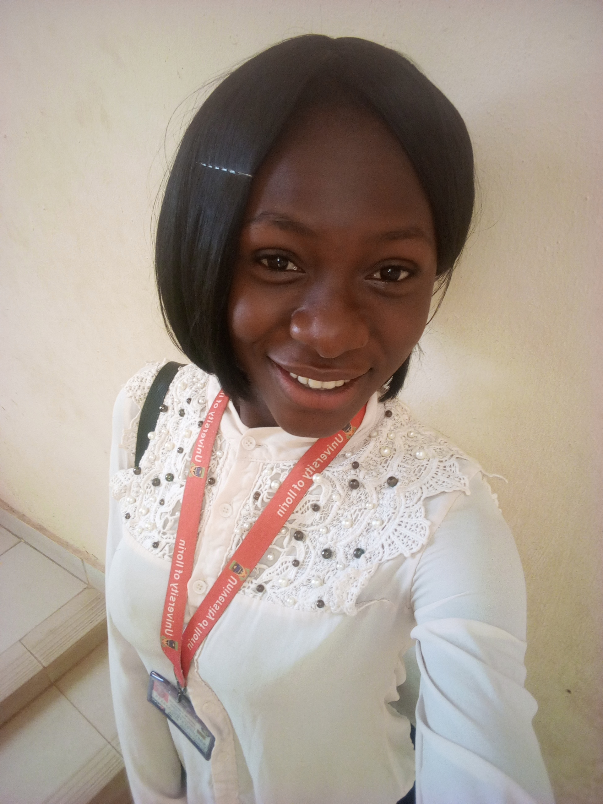

About
My name is Alao Peace Ovayoza, I am a final year student of the department of Computer Engineering at the University of Ilorin. I am from Kogi State and I am based in Kwara State Nigeria.
Why I like my Job?
I do Networking because I love solving people's problem and that is exactly my passion.
How I started?
I started my career after my 3rd year in the University. This was during my 3 Months SIWES at Network Operations Center University of Ilorin, Kwara State.
My Experience!
I have learnt lots of things in this past years. I can now do Installation and configuration of Switches and Routers.I am also proficient in WiFi Deployment and Network Design
Challenges?
The major milestones in my career is the aspect of climbing a mast to install network equipment.
My leisure
I do other eventful things after work like Programming, Reading books on life matters and all. My passion is to bring smiles to peoples face and my hobbies include singing, acting, dancing,meeting people.I also enjoy talking about life, career and Family.